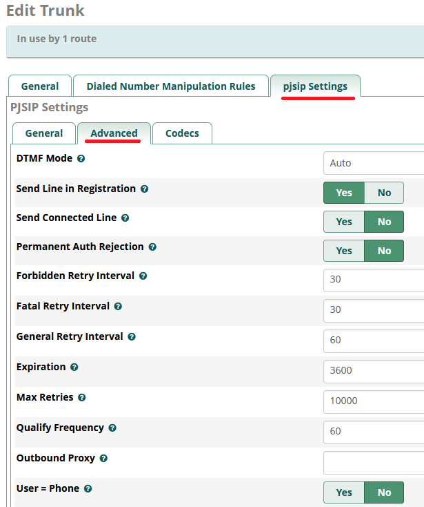
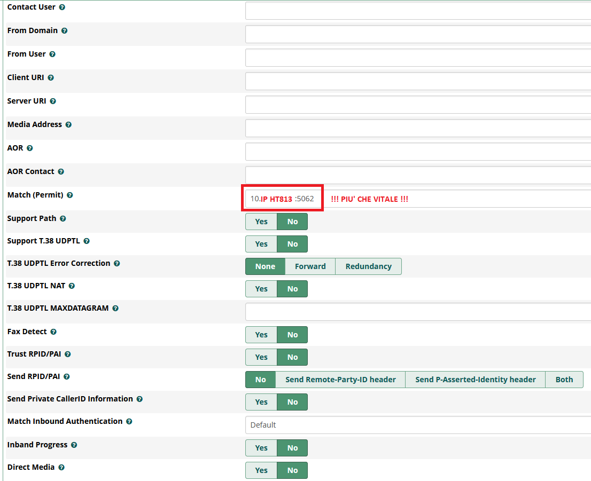

GUIDA ALL'INTEGRAZIONE DI UNA LINEA ANALOGICA CON FREEPBX TRAMITE GRANDSTREAM HT813, CON CONFIGURAZIONE SPECIFICA PER L'ITALIA, PER IL BLOCCO DI TUTTE LE CHIAMATE, ECCETTO QUELLE IN WHITELIST
Introduzione: Blocco delle Chiamate con FreePBX e HT813
Nel mondo delle telecomunicazioni, spesso ci si trova a dover fronteggiare il
fastidio delle chiamate indesiderate, come lo spam o il telemarketing. Per
evitare tutto ciò, ho adottato una strategia semplice ed efficace: una lista
bianca. Tutti i numeri non memorizzati in questo elenco, vengono bloccati
automaticamente. Questa soluzione mi permette di evitare l'inconveniente di
chiamate indesiderate, dato che ricevo continuamente spam da numeri infiniti e
sempre diversi. Poiché non utilizzo il telefono per lavoro (e le chiamate da
numeri sconosciuti sono rare e generalmente poco significative), ho preferito
questa soluzione rispetto all'uso di una lista nera.
Nel caso si voglia adottare una strategia differente, con poche modifiche è
possibile implementare una lista nera, bloccando solo i numeri considerati
problematici e aprendo le porte per tutto il resto. Inoltre, se si preferisce
non perdere telefonate importanti, è possibile attivare la segreteria per le
chiamate rifiutate, così da garantire che nessuna chiamata importante venga
ignorata.
In questa guida, descriverò il mio approccio per il blocco delle chiamate
utilizzando FreePBX e HT813, con un focus principale sulla lista bianca.
Tuttavia, lascio spazio a voi per esplorare e condividere nuove funzionalità non
trattate, poiché FreePBX e il VoIP sono strumenti molto potenti e flessibili.
Potete ampliare la guida con commenti e suggerimenti per migliorare
ulteriormente il sistema.
Descrizione del Problema
Il problema che ho affrontato consisteva nel dover bloccare tutte le chiamate in
entrata, tranne quelle provenienti da numeri specifici considerati sicuri.
Questo è particolarmente utile per evitare chiamate indesiderate (spam,
telemarketing, ecc.) senza dover gestire una lista nera che spesso è difficile
da mantenere, vista la continua variazione dei numeri da cui arrivano le
chiamate spam.
Collegamenti
- Lo schema mostra i collegamenti hardware di come installare il tutto.
Linea PSTN Analogica: La tua linea telefonica analogica tradizionale. In
caso di fibra, la porta del vostro modem/router dove attaccate il vostro
cordless.
Impianto analogico: Il tuo impianto telefonico tradizionale allacciato
alla linea telefonica fissa.
Telefono VoIPx: Un telefono che si connette direttamente alla rete dati
e utilizza il protocollo VoIP per effettuare chiamate.
Adattatore ATA (Grandstream HT813): Un dispositivo che converte i
segnali analogici della linea PSTN in segnali digitali VoIP e viceversa.
Router Internet (Access Point): Il dispositivo che gestisce la tua
connessione a Internet.
Server FreePBX: Un software che gestisce il tuo sistema telefonico VoIP,
fungendo da centralino.
PC1 VoIP1 e Android VoIP2: Usando software FREE tipo “linphone” https://www.linphone.org/home/ è possibile usare cellulari o dispositivi come PC, esattamente come se fossero telefoni VoIP. Se nel vostro interno avete anche un server VPN, potete entrare in VPN da remoto e godere della vostra linea fissa anche se vi trovate fuori casa.
Struttura del sistema:
Il
server FreePBX è allacciato al router, ha accesso a Internet e
gestisce il routing delle chiamate in base all'origine e alla destinazione.
Grandstream HT813 (FXO) è allacciato alla linea telefonica analogica
(PSTN).
Grandstream HT813 (FXS) è allacciato all’impianto analogico (ai tuoi
telefoni cordless) e si registra come un'estensione sul server FreePBX.
I telefoni VoIP sono allacciati alla rete locale.
Funzionalità del sistema:
Chiamate interne: Le chiamate tra il telefono analogico e i telefoni
VoIP vengono gestite internamente da FreePBX.
Chiamate esterne: In questo caso, FreePBX Instrada le chiamate esterne
verso la linea PSTN, componendo un “numero di Gateway, impostato in HT813”.
Di seguito verrà illustrato nei dettagli.
Integrazione delle funzionalità: Funzionalità come la segreteria
telefonica, la registrazione delle chiamate e le conferenze, funzionano su
tutti i dispositivi connessi.
Blocco per le chiamate: FreePBX può bloccare le chiamate indesiderate,
come lo spam telefonico.
Controllo avanzato: FreePBX offre un controllo granulare sulle chiamate in entrata e in uscita, con la possibilità di configurare regole di routing, blacklist e altre funzionalità.
Dettagli funzionalità riguardo la composizione dei numeri (chiamate uscenti):
Metodo di Fase: Determina come vengono composte le chiamate.
Metodo di Fase 1 (One-Stage Dialing): Invia l'intero numero in una
volta. Questo è generalmente il metodo preferito perché è più semplice e più
compatibile con i moderni sistemi VoIP.
Metodo di Fase 2 (Two-Stage Dialing): Richiede la composizione di un codice di accesso (ad esempio '9') per ottenere una linea esterna, attendere un secondo tono di linea e quindi comporre il numero completo. Questo metodo potrebbe essere necessario per alcuni provider PSTN o configurazioni specifiche.
Piano di Composizione: Definisce i formati numerici consentiti per le chiamate
in uscita. L'esempio "{ [*x]+ }" consente numeri che iniziano con un asterisco,
seguito da qualsiasi cifra, o solo cifre. Modificando questo piano, puoi
limitare le chiamate in uscita a numeri specifici o bloccare determinate
chiamate. Ad esempio, potresti voler consentire solo chiamate a numeri nazionali
o bloccare le chiamate a numeri internazionali.
Ritardo Minimo Prima di Comporre il Numero PSTN:
Introduce un ritardo prima che
l'ATA invii il numero composto alla linea telefonica.
Aumentare questo valore (ad esempio a 1000 ms) aggiunge un ritardo di 1 secondo,
che può essere utile su linee telefoniche più vecchie o per dare al sistema il
tempo di rilevare il tono di linea.
Diminuire questo valore riduce il ritardo prima della composizione.
PARTE 1: INSTALLAZIONE E CONFIGURAZIONE DETTAGLIATA DI FREEPBX PER L'ITALIA
FreePBX è un'interfaccia grafica (GUI) open source che semplifica la configurazione e la gestione di un sistema telefonico VoIP basato su Asterisk. Consente di creare e gestire centralini telefonici aziendali o privati, supportando funzionalità avanzate come la gestione delle chiamate, il voicemail, la segreteria telefonica, i gruppi di chiamata, le code di chiamata, e molto altro.
A cosa serve FreePBX:
Gestione chiamate VoIP: consente di
configurare numeri di telefono, centralini, e diramazioni per la gestione
delle chiamate in ingresso e uscita.
Funzionalità avanzate: supporta la
registrazione delle chiamate, la gestione dei voicemail, la gestione delle
chiamate in conferenza, la gestione delle code e dei gruppi di chiamata,
ecc.
Scalabilità: è adatto sia per piccole aziende che per sistemi complessi, e supporta integrazioni con dispositivi SIP e altri strumenti VoIP.
Dove scaricarlo:
FreePBX può essere scaricato dal sito ufficiale
https://www.freepbx.org/downloads/
Fino alla versione 16, è disponibile anche come
installazione ISO (per creare un sistema operativo completo con FreePBX
preinstallato). Dalla versione 17, sembra non vengano più rilasciate ISO, ma
occorre installare FreePBX sotto una versione Debian.
https://sangomakb.atlassian.net/wiki/spaces/FP/pages/295403538
https://sangomakb.atlassian.net/wiki/spaces/FP/pages/230326391/FreePBX+17+Installation
https://sangomakb.atlassian.net/wiki/spaces/FP/pages/230850573/Upgrading+to+FreePBX+17
https://sangomakb.atlassian.net/wiki/spaces/PG/pages/20807752/Backup+and+Restore+Version+15
https://sangomakb.atlassian.net/wiki/spaces/PG/pages/41746505/fwconsole+commands+15
A voi la scelta su cosa scaricare. La guida però è strettamente legata alla
versione 16, quella scelta da me al momento della mia configurazione.
Come installarlo (versione 16 scelta da me):
Creare una macchina virtuale o fisica:
Se avete un PC con poca potenza (purché x64), potete sfruttare quello
per installare FreePBX. In alternativa, potere usare un software di
virtualizzazione. Io ho scelto ProxMox, ma ce ne sono altri, come VmWare
Player. Assegnate alla macchina virtuale almeno 2 (meglio 3 o 4) Core, con 4
(meglio 5 o 6) Giga di Ram. 40 Giga di Hard Disk dovrebbero essere
sufficienti, ma se pensate di usare la macchina come archiviazione per
l’audio telefonico registrato e avete il disco rigido (fisico) grande, non
siate tirchi, altrimenti rischiate di dover reinstallare tutto il sistema
per spazio insufficiente.
Scaricare l'immagine ISO:
Vai sul sito ufficiale di FreePBX e scarica l'immagine ISO per
l'installazione.
Se stai installando il sistema su una macchina fisica, potresti aver
necessità di creare un supporto di avvio (ad esempio, una chiavetta USB o un
DVD) con il software di tua scelta (come Rufus o balenaEtcher).
Se stai installando il sistema su una macchina virtuale, potresti usare il
file ISO scaricato come un DVD virtuale, senza necessità di creare il
supporto di installazione.
Avviare l'installazione:
Inserisci il supporto di avvio nel computer su cui vuoi installare
FreePBX, o monta la ISO come un DVD virtuale sulla tua macchina virtuale.
Avvia il sistema dal supporto USB o DVD.
Segui le istruzioni a schermo per installare FreePBX. Il processo richiederà
la configurazione di rete, la partizione del disco e l'installazione del
sistema operativo di base (CentOS o una distribuzione compatibile).
Configurazione iniziale:
Una volta completata l'installazione, potrai accedere all'interfaccia
web di FreePBX tramite un browser utilizzando l'indirizzo IP del server.
Completa la configurazione guidata per configurare il sistema (come la
lingua, il fuso orario, le credenziali di amministratore).
Non verrà chiesto quale IP utilizzare (almeno a me non è stato richiesto).
Per default, a FreePBX potrebbe venire assegnato un IP dinamico dal vostro
router. Dato che stiamo parlando di un server, è VITALE che FreePBX
abbia un IP STATICO. Per far questo, io ho adottato la strategia più
semplice: creare un leases nel router tra il MAC della macchina di FreePBX e
un IP “statico”. Se volete la soluzione più professionale e complessa,
potete assegnare un IP statico a FreePBX direttamente dal terminale linux
del server. Credo che valgano le regole “standard di linux”.
Aggiungere dispositivi e configurare
funzionalità:
Puoi aggiungere telefoni SIP, gateway VoIP e configurare le varie
funzionalità del centralino tramite l'interfaccia web.
Di seguito, la mia configurazione dettagliata su come usare FreePBX per il
blocco di tutte le chiamate, eccetto i numeri in lista bianca.
1) Registrare le
estensioni per i telefoni.
Ripetere questa procedura per ogni telefono (estensione) che volete registrare.


2) Creare un gruppo per lo squillo di un numero limitato di telefoni, utile soprattutto per le chiamate tra interni (facoltativo).


3) Creare un nuovo Trunk in FreePBX:



4) Creare la rotta in
uscita, per le chiamate uscenti.
SCELTA 1: Il “Dial Patterns” è settato con X.
Questo dovrebbe accettare qualsiasi cosa in composizione. Personalizzando la
stringa, è possibile bloccare numeri in uscita, come le chiamate verso numeri a
pagamento, chiamate internazionali, o qualunque cosa vogliate. La versione
gratuita di FreePBX dovrebbe avere qualche limitazione riguardo la
configurazione avanzata di Dial Patterns, ma se non avete esigenze particolari,
dovrebbe essere sufficiente.
SCELTA 2: Personalizzazione del “Dial Patterns”. (Blocco di ogni chiamata uscente verso qualsiasi altro numero fuori dai seguenti schemi).
Per abilitare le chiamate uscenti verso i numeri fissi nazionali italiani che iniziano con "0", puoi aggiungere questi pattern nell'Outbound Route:
0XXXXXXX 8 cifre
0XXXXXXXX 9 cifre
0XXXXXXXXX 10 cifre
0XXXXXXXXXX 11 cifre
Per abilitare le chiamate uscenti verso i cellulari italiani, puoi aggiungere questi pattern nell'Outbound Route:
3XXXXXXXXX Cellulari (10 cifre)
Per abilitare le chiamate uscenti verso i numeri verdi italiani, puoi aggiungere questi pattern nell'Outbound Route:
800. Numeri verdi tradizionali
803. Altra serie di numeri verdi
00800. Numeri verdi europei
È importante notare che alcuni numeri che iniziano con 80X (dove X è diverso da 0 o 3) potrebbero essere a pagamento, quindi è meglio limitarsi specificamente a 800 e 803 se vuoi consentire solo i numeri effettivamente gratuiti.


5) Creare la rotta in entrata per le chiamate entranti.


6) Adesso non
potete ricevere nessuna telefonata.
I telefoni non squilleranno mai. Ora
entriamo “nel cuore della soluzione”, creando la nostra
“lista bianca” con i numeri autorizzati. Capirete perché ho messo tra
virgolette “lista bianca”.
Potete importare tutti i contatti dalla vostra rubrica di Gmail, ma bisognerà
“faticare”, perché la cosa è un po’ complessa. Di seguito verrà illustrato come
fare.


7) Come importare tutti i contatti della vostra rubrica Gmail.
Per prima cosa, esportate la vostra rubrica da Gmail in formato csv.
Seguite le guide di Google. Successivamente, con Excel, importate il file csv
e lavoratelo, affinché abbia questa struttura:
number,description
0123456789,
0234567890,
0345678901,
Non spiego in dettaglio i passaggi di esportazione della rubrica da Gmail e la
lavorazione del file csv in Excel. Rimando ad altra documentazione online per
questo. Anche perché, esistono più software per lavorare i files csv, che sono
file testuali. Se non avete Excel o usate altri software free, le spiegazioni
mirate a Excel sarebbero inutili.
number,description = E’ VITALE. Deve essere presente nel file csv.
Le altre righe sono i numeri di telefono. Ogni numero deve essere seguito da
virgola, incluso l’ultimo. Eliminate i prefissi nazionali “+39” e eventuali
spazi tra le cifre. Inserite nella lista anche gli interni (6001 per esempio) e
i numeri dei gruppi se li avete creati. Non inserite invece il numero di gateway
di HT813 (5000 in questo caso). Una volta preparato il file, fare riferimento
alle seguenti immagini…………


N.B.: Ricordatevi di cliccare sempre sul bottone “Submit” di FreePBX e di applicare le configurazioni alla fine, cliccando sul bottone rosso in alto “Applica”, che comparirà subito dopo aver cliccato su “Submit”.
PARTE 2: CONFIGURAZIONE DETTAGLIATA DEL GRANDSTREAM HT813 PER L'ITALIA
Per garantire il corretto funzionamento dell'HT813
con la rete telefonica italiana e per integrarlo con il server FreePBX, è
fondamentale configurare in maniera ottimale le impostazioni del Grandstream.
Questo dispositivo è configurabile da browser Web. Non spiego nei dettagli come
entrare nell’interfaccia Web, ipotizzando che, chi sta leggendo questa guida,
abbia familiarità con le reti e gli indirizzi IP.
Credenziali di default: (IP = `192.168.2.1`, username = `admin`, password= `admin`).
Di seguito riporto le parti importanti della mia configurazione, il lavoro di
una lunga fase di sperimentazione. Se ritenete che qualche settaggio sia
migliorabile, potete voi stessi aggiungere suggerimenti.


Dial Tone:
f1=430@-17,c=200/200;f2=430@-17,c=600/1000;
Ringback Tone: f1=430@-17,f2=430@-17,c=2000/4000;
Busy Tone: f1=430@-17,f2=430@-17,c=500/500;
Reorder Tone: f1=430@-17,f2=430@-17,c=200/200;
Confirmation Tone: f1=430@-17,f2=430@-17,c=100/100-100/100-100/100;
Call Waiting Tone: f1=430@-17,c=300/10000;
Prompt Tone: f1=430@-17,f2=430@-17,c=0/0;


Primary SIP Server: Indirizzo IP di FreePBX
SIP User ID: Estensione 6001 creata in FreePBX
Authenticate ID: Uguale a SIP User ID
Authenticate Password: Stessa password impostata in FreePBX (estensione
6001)
Dial Plan: { [*x]+ }
Ring Tone n: c=2000/4000;


Primary SIP Server: Indirizzo IP di FreePBX
SIP User ID: 5000 (Sarà il gateway, per il Trunk e le chiamate uscenti)
Authenticate ID: Uguale a SIP User ID
Authenticate Password: Lasciare bianco
Dial Plan: { [*x]+ }
Lo stato finale del Grandstream apparirà così:
N.B.: Ricordatevi SEMPRE di cliccare su `Apply` in
fondo alla pagina, per salvare e applicare le impostazioni.
Terminata la configurazione, E’ VITALE riavviare FreePBX +
HT813.
Conclusioni:
Ora testate il tutto.
Provate a chiamare, a ricevere telefonate… se tutto è andato bene e se io non ho
tralasciato nessun passaggio nella guida, dovreste aver concluso magnificamente
l’obiettivo. Se avete telefoni VoIP che volete registrare, create per ogni
telefono un’estensione, come avete fatto per il 6001 (FXS del HT813). Creata
l’estensione, inserite il nome utente e la chiave nel vostro telefono VoIP,
secondo la sua specifica configurazione.
Se scoprite errori nella guida segnalateli.
Spero che troviate interessante il tutorial.
Link utili e ringraziamenti:
Per il download del firmware:
https://www.grandstream.com/support/firmware
Ringrazio cfusco per avermi incoraggiato a scrivere la guida e per avermi fornito prezioso materiale come bozza:
https://community.ipfire.org/u/cfusco/summary
Ringrazio il forum per aver risolto un mio problema:
https://community.freepbx.org/t/make-outgoing-calls-by-eliminating-two-step-dialing/102863
https://community.freepbx.org/t/how-to-fix-outbound-call-problems-with-grandstream-ht813-and-freepbx/103093/18
Un altro tutorial che devo ringraziare:
https://afonsogarcia.dev/2023/03/04/freepbx-%E2%9D%A4%EF%B8%8F-grandstream-ht813/
Per usare i vostri PC e i vostri cellulari come telefoni VoIP, registrandoli
come un’estensione a FreePBX:
https://www.linphone.org/home/
Codici utili da digitare nei telefoni:
http:// IP di FreePBX /admin/config.php?display=featurecodeadmin
Operazioni varie, appunti:
Per trasferire una chiamata:
##
Attendere la risposta “Trasferimento”
Digitare il numero di interno, 6002 ad esempio, che si riferisce ad un telefono registrato o a un gruppo di telefoni.
Ora esatta: *60
Cartella dove si trovano le telefonate registrate di FreePBX (catalogate per
data):
/var/spool/asterisk/monitor/
Da terminale, per aggiornare, pulire brutalmente i log di FreePBX e liberare
spazio:
(ATTENZIONE!!!! Un uso errato o improprio può causare
danni al sistema operativo. Lanciate i comandi solo su piattaforme di testing o
se si è certi di cosa si stia facendo).
---------------------------------------------------------------------
Aggiornamenti:
Comando per aggiornare il sistema:
yum update -y
Questo comando aggiornerà tutti i pacchetti del sistema, inclusi quelli relativi
a FreePBX e CentOS. Dopo aver eseguito l'aggiornamento, ti consiglio di
riavviare il sistema per applicare tutte le modifiche.
fwconsole ma upgradeall
Questo aggiornerà tutti i moduli di FreePBX all'ultima versione disponibile
compatibile con il sistema.
sudo reboot
---------------------------------------------------------------------
#Pulizia DB chiamate
mysql -u root -p asteriskcdrdb
password: lasciare vuoto
DELETE FROM cdr;
EXIT;
# Pulizia di pacchetti inutilizzati
sudo yum clean all && sudo yum autoremove
# Pulizia dei log
sudo fwconsole stop (IMPORTANTE STOPPARE PRIMA DI CANCELLARE)
sudo rm /var/log/asterisk/full && sudo rm -f /var/log/asterisk/* && sudo rm
-f /var/log/httpd/* && sudo rm -f /var/log/messages && sudo rm -f /var/log/asterisk/*.gz
&& sudo rm -f /var/log/httpd/*.gz
# Rimozione file temporanei
sudo rm -rf /tmp/*
sudo rm -rf /var/tmp/*
sudo fwconsole start (RIAVVIO AL TERMINE)
sudo reboot (VITALE ALLA FINE)
---------------------------------------------------------------------
Glossario dei termini VoIP:
VoIP (Voice over IP): Tecnologia che
consente di effettuare chiamate telefoniche tramite Internet.
ATA (Analog Telephone Adapter):
Dispositivo che converte i segnali analogici in segnali digitali VoIP e
viceversa.
PSTN (Public Switched Telephone Network):
La rete telefonica pubblica commutata tradizionale.
SIP (Session Initiation Protocol):
Protocollo utilizzato per stabilire, gestire e terminare sessioni di
comunicazione multimediale, come le chiamate VoIP.
Codec: Algoritmo utilizzato per
comprimere e decomprimere i segnali audio per la trasmissione su VoIP.
Jitter: Variazione nel ritardo dei
pacchetti di dati trasmessi su una rete, che può causare distorsioni nella
voce.
Latency: Ritardo nella trasmissione dei
dati su una rete, che può causare un'eco durante le chiamate VoIP.
QoS (Quality of Service): Insieme di
tecniche utilizzate per garantire la qualità delle comunicazioni VoIP su una
rete.
FXS (Foreign Exchange Station): Porta
che simula una linea telefonica tradizionale, utilizzata per collegare
telefoni analogici. L'HT813 ha una porta FXS per collegare il tuo telefono
analogico.
FXO (Foreign Exchange Office): Porta
che si connette a una linea telefonica PSTN, come quella fornita dal tuo
operatore telefonico. L'HT813 ha una porta FXO per collegarsi alla tua linea
analogica.
Trunk: In questo contesto, il trunk è il collegamento tra l'ATA Grandstream HT813 e il server FreePBX. Rappresenta il canale attraverso il quale le chiamate vengono instradate tra la linea analogica e il sistema VoIP.
Ricorda: Questa guida fornisce una panoramica generale. Per una
configurazione ancora più dettagliata, consultare il manuale utente del
Grandstream HT813 e la documentazione di FreePBX.
This work is licensed under Creative Commons Attribution-ShareAlike 4.0 International